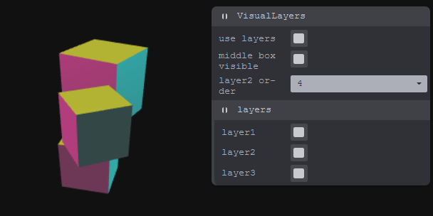
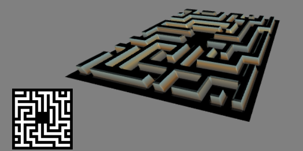

TransformControlsStatic - @author Mugen87 >>> discourse.threejs.org
CameraOnPath - @author Lighty + forerunrun >>> discourse.threejs.org
OrthographicInPerspective - @author gonnavis >>> discourse.threejs.org
Deforming - @author sciecode >>> discourse.threejs.org
GradientsOnShapes - @author tfoller >>> discourse.threejs.org
RaycastLineSegments - @author sumitkumar25 + gkjohnson >>> discourse.threejs.org
PaintWithinVolume - @author gkjohnson >>> discourse.threejs.org
LottieAnimation - @author Mugen87 >>> discourse.threejs.org
RETROBOY - @author prisoner849 >>> discourse.threejs.org
 LayerSystem - @author trusktr >>> discourse.threejs.org
UpdateLineGeometry - @author mjurczyk >>> discourse.threejs.org
ClippingGeometry - @author jlhill17 >>> discourse.threejs.org
AnimationWithGSAP - @author Mugen87 >>> discourse.threejs.org
TransparentCylinderWithText - @author 53RG0 + Mugen87 >>> discourse.threejs.org
HexagonalGridFormation - @author prisoner849 >>> discourse.threejs.org
OrbitcontrolsCollisionDetect - @author seanwasere >>> discourse.threejs.org
InstancedBufferGeometryClipping - @author Mugen87 >>> discourse.threejs.org
ExtrudeGeometryCSG - @author Leon-Sam + seanwasere >>> discourse.threejs.org (see more examples there)
FloatingBubble2D - @author hrahimi270 >>> discourse.threejs.org
MirrorWithTransparency - @author Mugen87 >>> discourse.threejs.org
MeshPhysicalMaterial - @author drcmda >>> discourse.threejs.org (see more examples there)
 RotationOfBone
- @author seanwasere
>>>
discourse.threejs.org
RotationOfBone
- @author seanwasere
>>>
discourse.threejs.org
ReflectorAndLayers - @author Mugen87 >>> discourse.threejs.org
AnnotationsMoveWithModel - @author novice_coder/prisoner849 >>> discourse.threejs.org
LDrawLikeEdges - @author prisoner849 >>> discourse.threejs.org
VolumetricDisplayOfParticles - @author prisoner849 >>> discourse.threejs.org
InstancedMeshShaderMaterial - @author AlaricBaraou + Mugen87 >>> discourse.threejs.org
ShowingInternalGeometry - @author scc helpt by mjurczyk >>> discourse.threejs.org
Simulating-2D-rendering - @author Mugen87 >>> discourse.threejs.org
CanvasTexture - @author Workruft >>> discourse.threejs.org
Particles - @authors magdazelena + Mugen87 >>> discourse.threejs.org
DOM-ContentOnObject - @author trusktr >>> discourse.threejs.org
CollisionResponse - @author Aaa_Aaa >>> discourse.threejs.org
Threejs&BabylonjsSameScreen - @author monsieurbadia >>> discourse.threejs.org
PostprocessingBlurEffect - @author trusktr >>> discourse.threejs.org
3DVectorVisualizer - @author leemun1 >>> discourse.threejs.org
LanternsFish(instancing+DataTexture) - @author prisoner849 >>> discourse.threejs.org
BasicViewCube - @author leemun1 >>> discourse.threejs.org
WalkableAreasControl - @author hofk >>> discourse.threejs.org
AnimationHotspot - @author mmalex >>> discourse.threejs.org
TextureMulti-layer - @author Fyrestar >>> discourse.threejs.org
BlurOrBloomEffect - @author Alain_Barrios >>> discourse.threejs.org
BooleanOperators2D - @ several authors >>> discourse.threejs.org
Stencil&CSG - @author makc3d >>> discourse.threejs.org
envMap-ShaderMaterial - @author Mugen87 >>> discourse.threejs.org
ZoomEffect - @author local_dev >>> discourse.threejs.org
EffectComposer - @author Mugen87 >>> discourse.threejs.org
CopyCanvasToTexture - @author makc3d >>> discourse.threejs.org
TextAnimation - @author Szenia Zadvornykh >>> discourse.threejs.org
SockPattern-Legs - @author makc3d >>> discourse.threejs.org
ColorManagement - @author looeee (Discover three.js) >>> discourse.threejs.org
SpritesWithCustomizedPointsMaterial - @author prisoner849 >>> discourse.threejs.org
InstancingPointCloud - @author lxiangyun93 (updated Mugen87) >>> discourse.threejs.org
AnimationFromClass - @author extremety1989 (fixed Mugen87) >>> discourse.threejs.org
MultisideRefraction - @author Alain_Barrios (fixed Mugen87) >>> discourse.threejs.org
 Heightmap - @author baronwatts >>> discourse.threejs.org